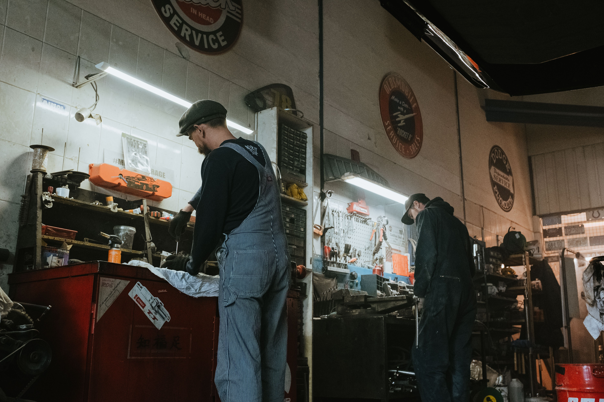

About TechFix Solutions

TechFix Solutions was started to give students, households, gamers and small businesses a repair service they can actually trust. Instead of guessing whether a repair shop will do quality work at a fair price, our customers get clear communication, honest quotes and dependable turnaround times.
Our Mission
TechFix Solutions is committed to offering technology repair services that are reliable, affordable and professional, backed by great customer service from first enquiry to final repair.
Our Vision
To be known as a trustworthy local provider of technology repair, recognised for quality workmanship, technical skill and customer satisfaction.
Who We Help
We work with students needing quick, affordable repairs, households relying on everyday devices, gamers wanting their consoles back in action, and small businesses that need dependable IT support without an in-house technician.